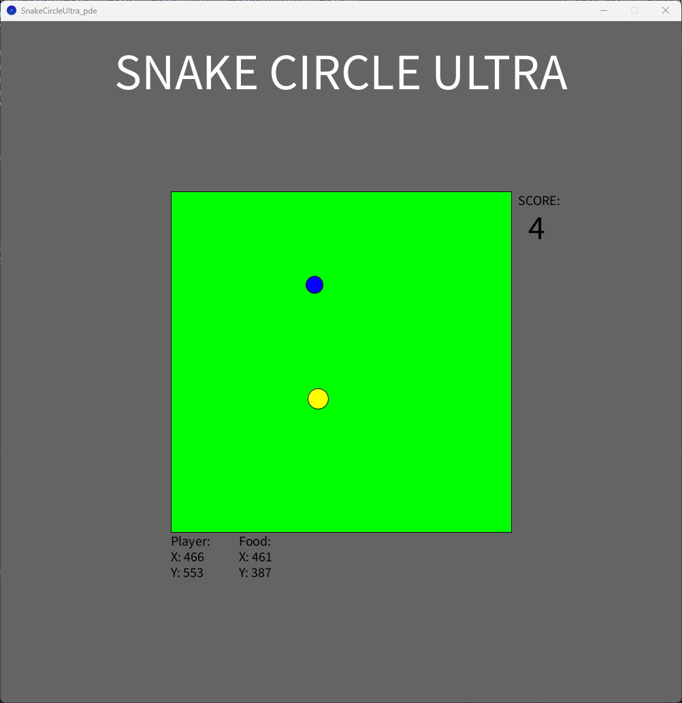

Web App: Calculator
This was made using HTML, JS, and CSS. It was created as part of my Foundation yr program's assignments.
Works as a basic calculator, I did not get around to adding a scientific variant. Which I was planning to - perhaps you can tell by the navbar at the top of this screenshot.
Java: Pyramid
Made using Processing IDE. Programmed for practice with java. It was also a university assignment.
Uses ArraysLists and aligns the blocks based on what row it is on.
By clicking on the window the pyramid will grow a new row. Once all rows are built it will reset.
Personal Project: Snake Game
I made this when first learning java, it was made in the Processing IDE. It makes use of very simple tools. It is not fully complete as it served it's purpose before I was able to complete development.
